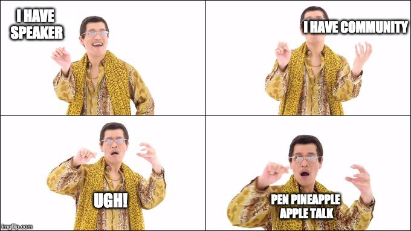

milano.dev
(gh'e da spetà un cicinin)## Situazione Speakers a Milano
A Milano, abbiamo la fortuna di avere molte communities e che fanno talks quasi ogni giorno. Dietro a questi eventi c'e il tempo e l'energia di organizzatori, locations e di speakers che per il piacere di condividere conoscenze ed esperienze rendono tutto questo possibile.
## Quindi tutto perfetto no?
Non e' cosi semplice, trovare speakers richiede tempo e non e' facile, organizzarsi per mesi successivi diventa ancora piu difficile, visto che per diverse ragioni uno speaker potrebbe non avere piu disppnibilita nel periodo che inizialmente andava bene.
## Cosa possiamo insieme?
Insieme possiamo costruire una lista di persone interessare a fare dei talk e degli argomenti di cui questa persona vuole parlare, spesso e volentieri un talk puo essere fatto in communites diverse che hanno un target diffente ma sono comunque toccare da quell'argomento.
Inizialmente avevamo creato questa lista sulla _blockchain_ usando _microservizi serverless_ e dei _microfrontend_ per ogni bottone, ma alla fine abbiamo deciso che per la V1 ma bene un google form
Questa lista sara' aperta e a disposizione degli organizzatori per vedere se si trova qualche match

Quindi! se sei interessato a partecipare all'iniziativa dando disponibilita a parlare ad un evento con un talk in particolare o di uno o piu argomenti in generale non ti resta che compilare il form
## First time speakers
Non e' facile mettersi in gioco e parlare in pubblico, ma fortunatamente e' una cosa che si puo imparare
Sono sicuro che c'e uno Speaker nascosto ogni developer ma alcuni sono nascosti meglio di altri
se una parte di te vorrebbe fare un talk ma per motivi personali non sei a tuo agio e non te la senti possiamo darti una mano a trovare qualcuno che ha esperienza in tenere talk che possa aiutarti e darti consigli. Compila il form e' spunta le sezioni relative al supporto
## Fatto 30 facciamo 31
Colgo l'occasione anche per chiedere a chi si trova dall'altra parte del microfono, perche le communities sono fatte tanto dagli organizzatori e speakers tanto dai i suoi partecipanti. Partecipanti, mi rivolgo a voi. cosa vorreste sentire? vorreste un meetup su _shen-lang_ o uno sulle _buzzword_? dei talks i comparison tra _rust e go_? magari scopriamo di avere molte persone che sono interessarete a topic che pensavamo "troppo di nicchia" o "non interessanti", mentre magari abbiamo tra amici e colleghi persone esperte in materia e pronte a condividere la loro conoscenza io personalmente apprezzerei dei _meta-talk_ talk sul come fare dei buoi talk o talks su come organizzare conferenze ed eventi, sia a livello di cosa da fare/non fare sia di cosa vuol dire trovare sponsor e budget. Mi piacerebbe molto vedere qualcuno proposti per parlare di questi argomenti
## Note Conclusive
A Milano siamo molto fortunati ad avere cosi tante communities attive, magari proprio perchè gli eventi sono tanti ci dimentichiamo del lavoro che c'e dietro. Oggi e' un ottima occasione di mandare un tweet, una email, o un semplice "grazie" alle vostre communities preferite!
## Contatti
per informazioni ci trovate su twitter o via email